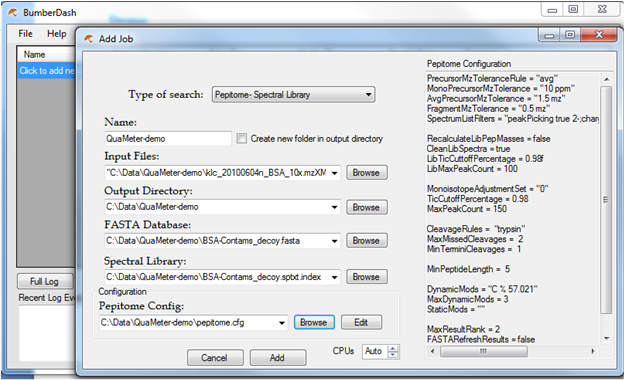
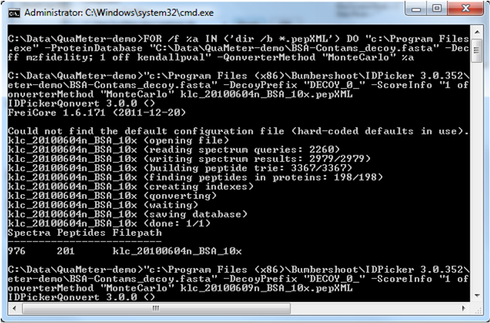
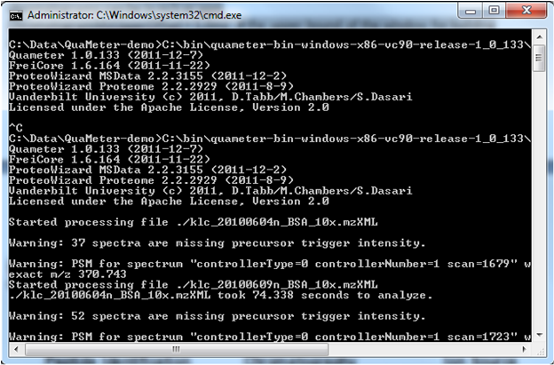
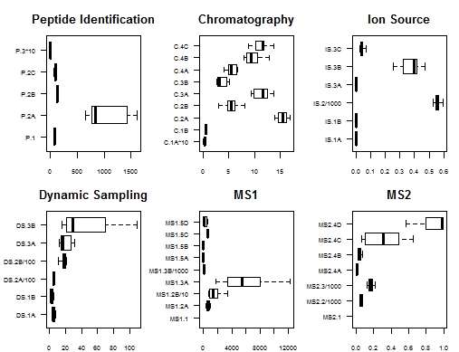

QuaMeter
QuaMeter is an open-source tool that computes metrics to enable the QA/QC evaluation of proteomics instrumentation. It is a re-implementation of the NIST MSQC software with several important additions. QuaMeter can read files from most mass spectrometry vendors via ProteoWizard. It can be incorporated into any workflow in which search engine generates pepXML or mzIdentML files.
QuaMeter is currently available as a command-line tool; it is primarily intended as a back-end for QC pipelines.
1. QuaMeter has only been tested with Bumbershoot identification tools such as MyriMatch, TagRecon and Pipetome. Download the GUI for running these tools here.
2. QuaMeter depends on confidence assessment by IDPicker 3 in the form of idpDB files. Download IDPicker 3 here.
3. Use IDPicker 3's idpQonvert tool to create idpDBs from pepXML/mzIdentML files. A sample command-line:
c:\path\to\idpqonvert.exe c:\path\to\*.pepXML -ProteinDatabase c:\path\to\proteins.fasta
4. Create a quameter.cfg file using a text editor like Notepad; set the variables like this:
Instrument = ltq # if set to LTQ, average masses are used, else monoisotopic masses
RawDataPath = c:\path\to\raw-files # where to find the raw files for each idpDB
RawDataFormat = raw # the file extension to expect for the raw files; e.g. mzML, mzXML, raw
ScoreCutoff = 0.05 # IDPicker FDR cutoff
ChromatogramMzLowerOffset = 1.0mz # the lower bound of the window for building chromatograms; can be in m/z or ppm
ChromatogramMzUpperOffset = 1.0mz # the upper bound of the window for building chromatograms; can be in m/z or ppm
ChromatogramOutput = false # if true, creates an mz5 file with the chromatograms (best viewed with SeeMS)
5. Run QuaMeter on the idpDBs you want metrics for. A sample command-line:
c:\path\to\quameter.exe c:\path\to\*.idpDB
A tab-separated quality metrics file will be created for each idpDB (written to the current working directory). For example, for data.idpDB you will get data.qual.txt. Each file has the metric ids in the first row and the metric values in the second row. You can concatenate many of these files together to build a table.
Below is a step-by-step tutorial to process 10 BSA LC-MS/MS runs collected from a Thermo Fisher LTQ-XL mass spectrometer. All files are identified using the Pipetome spectral library search tool. Raw identifications are filtered by IDPicker 3 for peptide validation to produce idpDB files. QuaMeter reads spectral raw files and idpDB files to compute QC metrics. R scripts are provided to combine metrics files for initial instrument variability analysis.
1. Run spectral library search by Pipetome through the BumberDash GUI.

“BSA-Contams_decoy.fasta”, “BSA-Contams_decoy.sptxt.index” and “pepitome.cfg” files can be downloaded here.
2. Download IDPicker 3 and convert pepXML files to idpDB files by the idpQonvert tool. For example, type the following command in a terminal window.
FOR /f %a IN ('dir /b *.pepXML') DO "c:\Program Files (x86)\Bumbershoot\IDPicker 3.0.352\idpQonvert.exe" -ProteinDatabase "C:\Data\QuaMeter-demo\BSA-Contams_decoy.fasta" -DecoyPrefix "DECOY_0_" -ScoreInfo "1 off hgt; 1 off mzfidelity; 1 off kendallpval" -QonverterMethod "MonteCarlo" %a

3. Create a quameter.cfg file as shown below in current working directory and run command:
C:\bin\quameter-bin-windows-x86-vc90-release-1_0_133\quameter.exe *.idpDB
quameter.cfg
RawDataPath = ./ # where to find the raw files for each idpDB
RawDataFormat = mzXML # the file extension to expect for the raw files; e.g. mzML, mzXML, raw
Instrument = LTQ # if set to LTQ, average masses are used, else monoisotopic masses
ScoreCutoff = 0.02 # IDPicker FDR cutoff
ChromatogramMzLowerOffset = 1.0mz # the lower bound of the window for building chromatograms; can be in m/z or ppm
ChromatogramMzUpperOffset = 1.0mz # the upper bound of the window for building chromatograms; can be in m/z or ppm
ChromatogramOutput = false # if true, creates an mz5 file with the chromatograms (best viewed with SeeMS)

4. The following R scripts can be used to generate a boxplot for each metric as shown below.

R scripts
### read all qual.txt files and combine to one dataframe
readQualFiles <- function(qualFilePath) {
qualFiles <- Sys.glob(paste(qualFilePath,"/*.qual.txt", sep=''))
allData <- lapply(qualFiles, function(.file){
dat<-read.table(.file, header=TRUE)
dat # return the dataframe
})
mergedDF <- do.call(rbind, allData) # combine into a single dataframe
colnames(mergedDF) <- c("Filename","C.1A","C.1B","C.2A","C.2B","C.3A","C.3B","C.4A","C.4B","C.4C","DS.1A","DS.1B","DS.2A","DS.2B","DS.3A","DS.3B","IS.1A","IS.1B","IS.2","IS.3A","IS.3B","IS.3C","MS1.1","MS1.2A","MS1.2B","MS1.3A","MS1.3B","MS1.5A","MS1.5B","MS1.5C","MS1.5D","MS2.1","MS2.2","MS2.3","MS2.4A","MS2.4B","MS2.4C","MS2.4D","P.1","P.2A","P.2B","P.2C","P.3")
return(mergedDF)
}
setwd("C:/Data/QuaMeter-demo")
qualdata <- readQualFiles("C:/Data/QuaMeter-demo") # path to the folder where QuaMeter metrics files stored
### scale some columns for plot
scaleColumns <- function(datatable) {
datatable$C.1A <- datatable$C.1A * 10
datatable$C.1B <- datatable$C.1B * 10
# datatable$C.2A <- datatable$C.2A / 10
# datatable$C.2B <- datatable$C.2B / 10
datatable$IS.2 <- datatable$IS.2 / 1000
datatable$DS.2A <- datatable$DS.2A / 100
datatable$DS.2B <- datatable$DS.2B / 100
datatable$MS1.2B <- datatable$MS1.2B / 10
datatable$MS1.3B <- datatable$MS1.3B / 1000
datatable$MS2.3 <- datatable$MS2.3 / 1000
datatable$MS2.2 <- datatable$MS2.2 / 1000
datatable$P.3 <- datatable$P.3 * 10
return(datatable)
}
mains <- c("Peptide Identification","Chromatography","Ion Source", "Dynamic Sampling","MS1", "MS2")
columns <- list(c("P.1","P.2A","P.2B","P.2C","P.3"), c("C.1A","C.1B","C.2A","C.2B","C.3A","C.3B","C.4A","C.4B","C.4C"), c("IS.1A","IS.1B","IS.2","IS.3A","IS.3B","IS.3C"),c("DS.1A","DS.1B","DS.2A","DS.2B","DS.3A","DS.3B"),c("MS1.1","MS1.2A","MS1.2B","MS1.3A","MS1.3B","MS1.5A","MS1.5B","MS1.5C","MS1.5D"),c("MS2.1","MS2.2","MS2.3","MS2.4A","MS2.4B","MS2.4C","MS2.4D")) ### removed filename column
boxnames <- list(c("P.1","P.2A","P.2B","P.2C","P.3*10"), c("C.1A*10","C.1B*10","C.2A","C.2B","C.3A","C.3B","C.4A","C.4B","C.4C"), c("IS.1A","IS.1B","IS.2/1000","IS.3A","IS.3B","IS.3C"),c("DS.1A","DS.1B","DS.2A/100","DS.2B/100","DS.3A","DS.3B"),c("MS1.1","MS1.2A","MS1.2B/10","MS1.3A","MS1.3B/1000","MS1.5A","MS1.5B","MS1.5C","MS1.5D"),c("MS2.1","MS2.2/1000","MS2.3/1000","MS2.4A","MS2.4B","MS2.4C","MS2.4D")) ### removed filename column
par(mfrow=c(2,3),mar=c(2,4,3,1) + 0.1 )
qualdata <- scaleColumns(qualdata)
m <- 1
for (j in 1:length(columns))
{
boxplot(qualdata[,columns[[j]]],horizontal=TRUE, las=1, main=mains[m], names=boxnames[[j]], cex.axis=0.65,outline=FALSE)
m <- m + 1
}